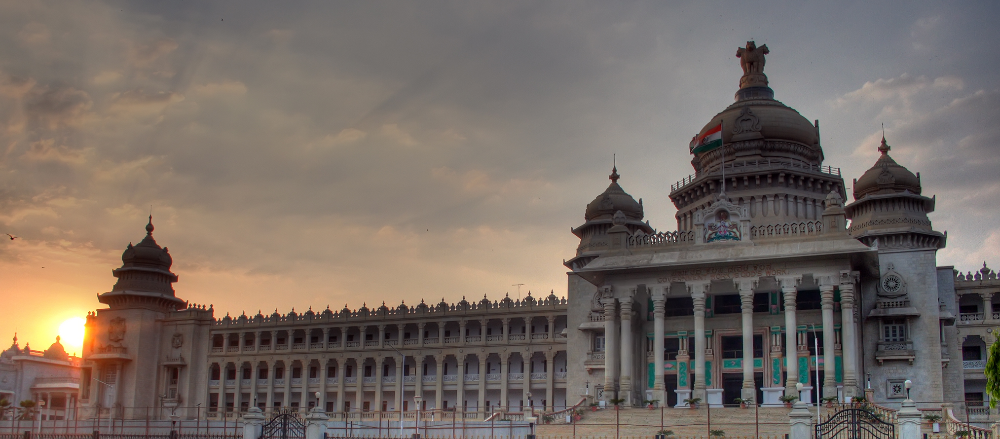
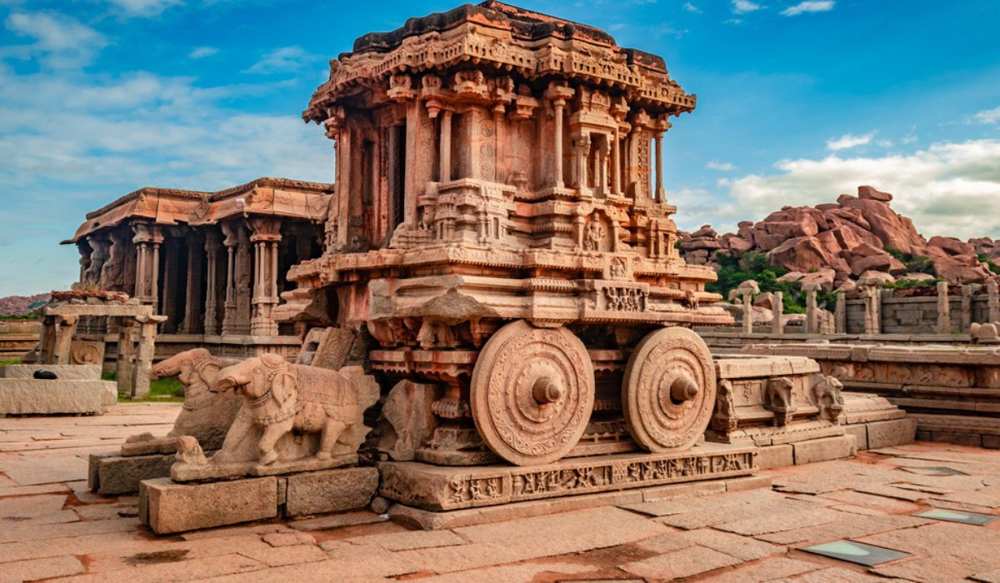
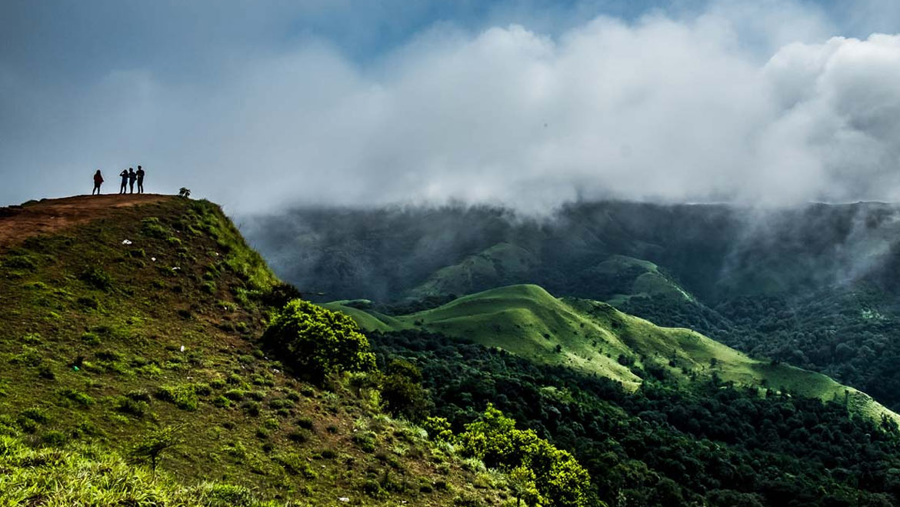
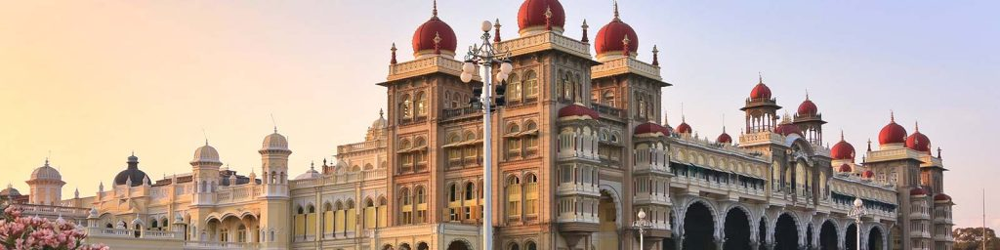

Book Now
▼
Bangalore or Bengaluru, the capital of Karnataka, may be more famous as a hub for the Information Technology sector, but it is also a gem of a tourist destination. The bustling metropolis beckons vacationers primarily with its scenic, lush green spaces that have earned it the nickname, ‘Garden City’. Among the other things that tempt holidaymakers to plan a trip to Bangalore are its thumping nightlife, exquisite dining scene, myriad shopping districts and countless adventure opportunities.
People, who are heading to the ‘Silicon Valley of India’ for business purposes or leisure, have loads of places to visit in Bangalore for a memorable time and things to do in Bangalore.
Tourism in Hampi is famous for its ruins belonging to the erstwhile medieval Hindu kingdom of Vijayanagara, and it is declared a World Heritage site. The temples, monolithic sculptures, and monuments are a major part of Hampi tourism and attract travelers because of their excellent workmanship. The style of architecture found at Hampi reflects the splendor of the Vijayanagara Empire. The rugged landscape adds to the historic ambiance of this site.
Hampi is located in the central part of Karnataka in the southern part of India. It is 353 km from Bangalore, and 13 km from Hospet. It is located on top of the rugged terrain and is 467 m above sea level. The Tungabhadra River flows through Hampi.
Madikeri or Mercara, the capital of Coorg is a beautiful large hill town situated in Western Ghats. This hill station stands 1452 meters above sea level. The green woody slopes, colourful scenery, misty mountains, cascading falls, dense tropical forest, tea, coffee and spice plantations made this place a paradise of nature lovers.
This enchantingly beautiful place is popularly called as the ‘Scotland of India’ and also ‘Kashmir of South’. There are so many attractions in and around Madikeri
Mysuru, is one of the most popular tourist destinations in the state of Karnataka owing to its rich cultural heritage and fascinating royal history. It is fondly referred to as the ‘City of Palaces’ and rightly so. The city has myriad historical places narrating tales of the medieval era, the most popular ones being Mysore Palace and Jaganmohan Palace.
Other prominent places to visit in Mysore are Chamundeshwari Temple, Philomena’s Cathedral, Brindavan Gardens, and Mysore Zoo.